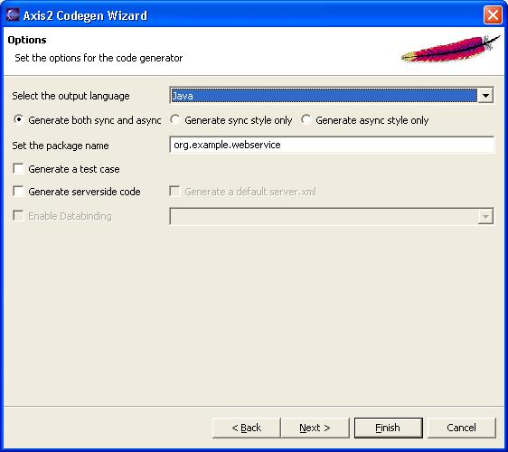

The Axis2 code generator comes built-in with an Eclipse plug-in. This document explains the installation and usage of the Axis2 code generator plug-in.
The easiest way to obtain the plug-in would be the binary distribution. The full Axis binary distribution contains the compiled version of this plug-in under the tools directory.
If one needs to build the plugin from source it is not as trivial as running the Maven build. The reason is that the plug-in depends heavily on the Eclipse classes, which are only available in an Eclipse environment. The recommended procedure is to run the create-project.xml (in the "modules\tool" directory of the source distribution) build file which will create two folders (the other one for the Service Archiver tool) and copy the necessary files to relevant folders. Then Eclipse should be configured to open the contents in a PDE project. Please go through the Eclipse documentation to learn how to open projects in the PDE format.
Once you've obtained the plug-in just unzip the content of the plug-in archive to the eclipse plug-in directory (if it is the zipped-binary version) or copy the necessary folders to the eclipse plug-in directory and restart Eclipse.
Note - This plug-in works on Eclipse version 3.1 and upwards. The provided screen shots may slightly differ with what the user would actually see but the fuctuonality has not been changed.
If the plug-in is properly installed you should see a new wizard under the "New" section.(use the File -> New -> Other or Ctrl + N )
Selecting the wizard and pressing the next button will start the code generator wizard. Following is the first wizard page.

Selecting the generate code from WSDL option leads to the next page. Note that the Java-to-WSDL tool is disabled.

To move on to the next page the WSDL file location must be given. The browse button can be used to easily browse for a file rather than typing the whole path.
Once the WSDL file is selected, codegen options are to be selected. By far this is the most important page in this wizard, which determines the characteristics of the code being generated. Novices need not worry about these options since the most common options are defaulted, But advanced users will find it very easy to "turn the knobs" using these options.
Note - The databinding option "xmlbeans" would not work for Eclipse version 3.0. This has been a known problem and users are recommended to use Eclipse version 3.1 or upwards

Once the options are taken care of, only the final step of the code generation is left. it is the selection of the output file location.

When the output file location is selected, the Finish button will be enabled. Pressing the finish button will generate the code and a message box will pop up acknowledging the success. Well Done! Now you are ready for Axis2 Code generation.